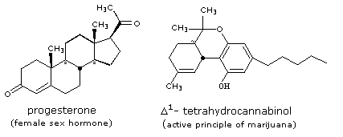

Isomer Properties |
|---|
A striking example of the different properties that constitutional isomers may have is found in the C21H30O2 compounds progesterone and Δ1-tetrahydrocannabinol (THC). Structural formulas for these two naturally occurring chiral isomers are presented in the following diagram.

The diketone progesterone is a crystalline solid, having a melting point 127-130 ºC. Tetrahydrocannabinol, on the other hand, is a liquid phenolic ether. Both compounds have a trisubstituted carbon-carbon double bond, but the chemical reactions of progesterone reflect its carbonyl functions; whereas, the reactions of THC are typical of a hindered phenol and a 3º-alkyl ether. The physiological properties of these compounds are dramatically different; progesterone acting as a hormone and THC as a hallucinogen. Interestingly, THC is nearly twice as toxic to female rats as to males. Three dimensional models of these isomers may be examined below.
It should be noted that, in contrast to constitutional isomers, stereoisomers are more likely to have similar properties, and that enantiomers (mirror image stereoisomers) will have identical properties when tested by symmetrical probes (e.g. melting point or reactivity with bromine).
Progesterone | Δ1-Tetrahydrocannabinol | |
|---|---|---|
Show Stick Model Show Ball&Stick Model |
Show Stick Model Show Ball&Stick Model |
This page is the property of The Edvibe Team.
Comments, questions and errors should
be sent to contact@edvibe.co.ke.
These pages are provided to the IOCD to assist in capacity building in chemical education. 05/05/2013